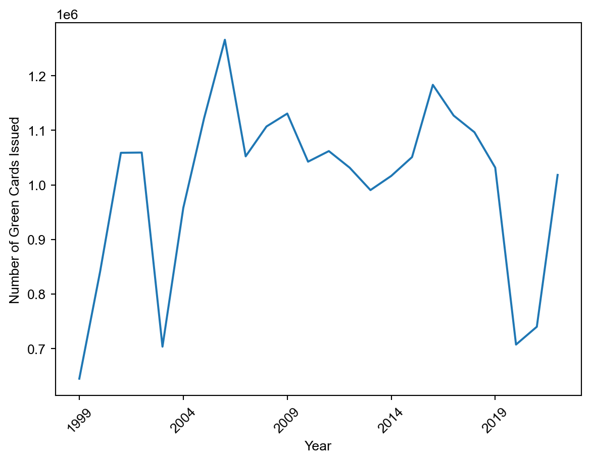
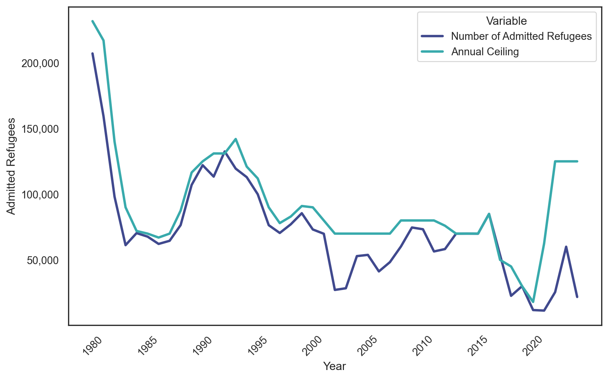
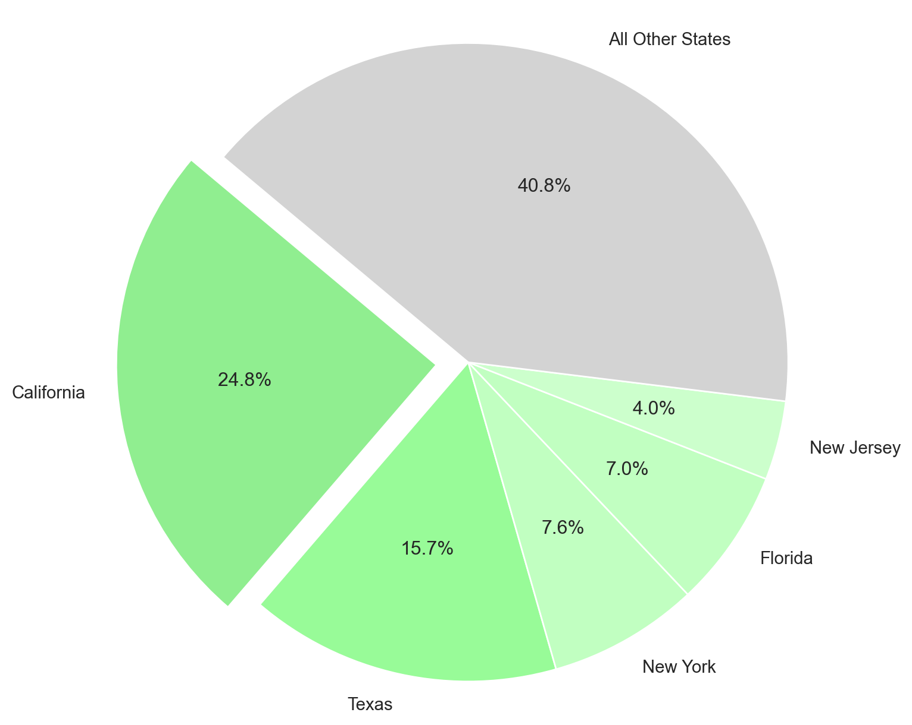
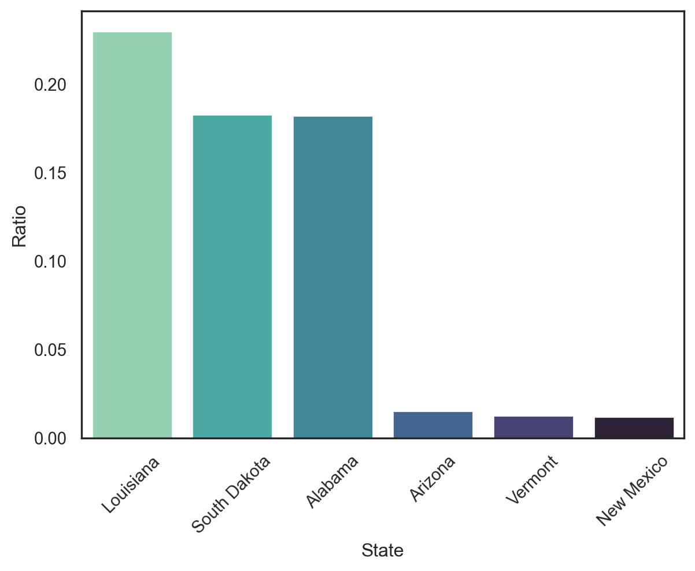
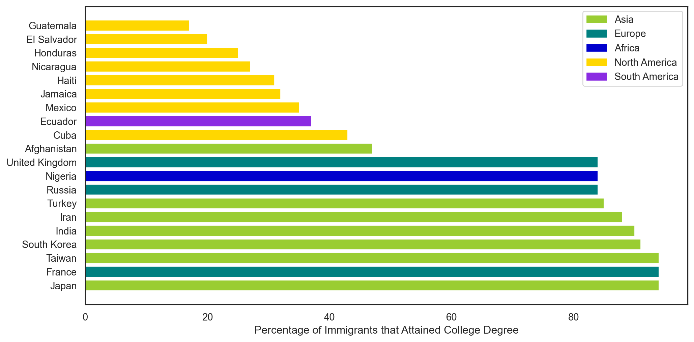

My inspiration for this research came from my own discomfort with being naive to the subject of immigration in my own country. All I hear about on the news is immigration. Some news channels tell me that it is ruining our country and we need to close the borders. Other sources tell me that we aren’t doing enough as a country to support immigrants and that they could really beneift our country if we allocated resources correctly to integrate them smoothly into our society.
I wanted to be able to make my own conclusions, or atleast better understand this domain, so I sought out concrete data pertaining to U.S. immigration, and began my analysis.
This project aims to uncover the patterns of immigration over time, observe areas where immigrants are residing, and highlight disparities between the educational attainment of immigrants based on their country of origin.
The findings from this project could potentially be used by U.S. policymakers to help them make more informed decisions regarding U.S. immigration.
The Data
The data used for this project comes from The Nonpartisan Migration Policy Institute. This orginization is an independent group that seeks to improve immigration and integration policies in the U.S. through research and analysis of data.
This was the perfect source of data for me. Through my background research I found so many biased and unproffesional sources that were publishing immigration data, and I did not want to include their data in my project.
In total, I worked with six datasets…
Legal Immigrants
A dataset that has the annual number of new legal permanent residents by country of birth.**
Distribution of Legal Immigrants by State
A dataset that holds information on the immigrant population by state.
Annual Refugees
A dataset that holds information on U.S. annual refugee resettlement ceiling and annual number of admitted refugees from the years 1975-2024.
Illegal Immigrant Estimates
A dataset that holds information on the National and State estimates of the unnathorized immigrant population from 2015 to 2019 (totals, not year over year).
Unacompanied Children
A dataset that holds information on the number of unaccompanied children released to sponsors by state from fiscal years 2014-2023.
Educational Attainment of Immigrants in the U.S.
A dataset that holds information on the educational attainment of recently arrived immigrants (ages 25 and over) by country of birth as of 2022.
Data Preprocessing
Feel free to skip this section if it is not of interest to you. It conatins information on data cleaning and the code block contains all imports needed for the analysis and the code cleaning the datasets.
The datasets were all brought in from excel spreadsheets so a lot of them had column names with spaces that had to be cleaned. Furthermore, a lot of values contained percentage symbols which also had to be remobved and those same values needed their data types to be changed in order to conduct analysis with them.
If you just want to look at the numbers and read through them. The best thing to do is go through my github repository where this website stems from and to read them through excel. However to conduct any sort of analysis with python or another programming language, cleaning the datasets in these ways is necessary.
Code
import pandas as pdimport matplotlib.pyplot as pltimport seaborn as snsimport plotly.express as pximport plotly.figure_factory as fffrom matplotlib.ticker import FuncFormatterimport pycountry_convert as pceducation = pd.read_csv('educational_attainment - Sheet1.csv')def remove_percent(df, columns):for column in columns: df[column] = df[column].str.replace('%', '').astype(float)return df# List of columns to remove '%' fromcolumns_to_remove_percent = ['Less than 9th Grade', '9th-12th Grade','High School Diploma or Equivalent',"Some College or Associate's Degree", "Bachelor's Degree or Higher"]# Apply the functiondf_cleaned = remove_percent(education.copy(), columns_to_remove_percent)children = pd.read_csv("Unnacompanied_children - Sheet1.csv")refugees = pd.read_csv("Refugge_resettlement - Sheet1.csv")immigrant_state = pd.read_csv("Immigrant_pop_state - Sheet1.csv")immigrant_state['Immigrant Share of Total State Population'] = immigrant_state['Immigrant Share of Total State Population'].str.replace('%','').astype(float)legal_country = pd.read_csv("new_legals_country - Sheet1.csv")unauthorized_estimates = pd.read_csv("Unauthorized_estimates - Sheet1.csv")unauthorized_estimates['State Share of the Total Unauthorized Immigrant Population'] = unauthorized_estimates['State Share of the Total Unauthorized Immigrant Population'].str.replace('%','').astype(float);
Questions and Results
Analyzing annual green card admissions
How many green cards are issued annually and to what countries are most of the green cards issued to? I plan to answer this question by pulling the first dataset, and then creating a line plot of the total amount of green cards issued year over year to analyze the pattern. Then I will total all the countries over all the given years.
C:\Users\Max\AppData\Local\Temp\ipykernel_23480\780057520.py:1: FutureWarning:
DataFrame.applymap has been deprecated. Use DataFrame.map instead.
C:\Users\Max\anaconda3\envs\capstone\Lib\site-packages\seaborn\_oldcore.py:1119: FutureWarning:
use_inf_as_na option is deprecated and will be removed in a future version. Convert inf values to NaN before operating instead.
C:\Users\Max\anaconda3\envs\capstone\Lib\site-packages\seaborn\_oldcore.py:1119: FutureWarning:
use_inf_as_na option is deprecated and will be removed in a future version. Convert inf values to NaN before operating instead.

Number of Green Cards Admitted by U.S. 1999-2022
Analyzing this figure, we can see that the number of green cards issued hit a low after 2001, and then spikes until about 2007. After that, there is a steady decrease in the number of green cards issued until 2020, where there has been an increase till present day.
Some possible explanations for these patterns can be the terrorist attack of 9/11 leading to a much more strict border control. Also, president Biden’s election into office in 2021 explains the increases we are seeing now. His campaign spoke a lot about letting more immigrants into the country and it is apparent that he and his administration have been keeping their promises.
The vast majority of these green cards were issued to individuals residing in the Americas as well as Asia. (Not shown in figure)
Immigration Trends
What are the trends of state immigration? For this question, I will build a chloropleth where the color of each state will correspond with the state’s immigrant share of total state population in 2022.
Percentages of total state populations that are authorized immigrants
Analyzing this figure, we can see that there are larger immigrant populations alongside the southern border, which makes sense as it is a much lesser distance to travel for immigrants coming from the Americas, which previously stated is the largest group in which immigrants are coming from.
There are hotspots in Florida and some North Eastern states like New York and New Jersey, which is suprising because these states are quite a hike away from the southern border. An explanantion for these numbers could be that these states offer the most oppurtunity for migrants.
When examing the northern border, we can see a lot of cold spots. Further research should look to into there are any other reasons before this besides distance.
Analyzing Refugee Statistics
Does the U.S. have the resources to house refugees (Not Immigrants)? To answer this question I will pull the third dataset and build a line plot with two lines. One line being the number of admitted refugees and the other being the annual ceiling the U.S. government claims that year. It will be interesting to see if the admitted line ever surpasses the annual ceiling, and additional research on what was going on in the world at any of those points would lead to interesting insight.
Code
refugees_clean = refugees.drop(range(5))refugees_clean = refugees_clean.applymap(lambda x: x.replace(',', '') ifisinstance(x, str) else x)columns_to_float = ['Annual Ceiling', 'Number of Admitted Refugees']refugees_clean[columns_to_float] = refugees_clean[columns_to_float].astype(float)refugees_melted = pd.melt(refugees_clean, id_vars='Year', var_name='Variable', value_name='Value')group_plot_2 = group_plotgroup_plot_2.rename(columns = {'variable':'Year', 'Country':'Variable', 'value':'Value'}, inplace=True)line_plot_final = pd.concat([group_plot_2, refugees_melted])line_plot_final.sort_values(by='Year', inplace=True)# Set style and palettesns.set(style="white", palette="mako_r", rc={"lines.linewidth": 2.5})# Create figure and axisfig, ax1 = plt.subplots(figsize=(10, 6))# Plot the main line plot on the primary y-axisline_plot = sns.lineplot(x='Year', y='Value', hue='Variable', data=line_plot_final[line_plot_final['Variable'] !='All Countries (total)'], ax=ax1, palette='mako')# Set primary y-axis labels and titleline_plot.set(xlabel='Year', ylabel='Admitted Refugees')# Set x-axis major locatorline_plot.xaxis.set_major_locator(plt.MultipleLocator(5))# Rotate x-axis labelsplt.xticks(rotation=45)# Format y-axis labels with commasSSline_plot.yaxis.set_major_formatter(FuncFormatter(lambda x, _: '{:,}'.format(int(x))))# Show the plotplt.show();
C:\Users\Max\AppData\Local\Temp\ipykernel_23480\3725856286.py:3: FutureWarning:
DataFrame.applymap has been deprecated. Use DataFrame.map instead.
C:\Users\Max\anaconda3\envs\capstone\Lib\site-packages\seaborn\_oldcore.py:1119: FutureWarning:
use_inf_as_na option is deprecated and will be removed in a future version. Convert inf values to NaN before operating instead.
C:\Users\Max\anaconda3\envs\capstone\Lib\site-packages\seaborn\_oldcore.py:1119: FutureWarning:
use_inf_as_na option is deprecated and will be removed in a future version. Convert inf values to NaN before operating instead.

Count of refugee admissions compared with refugee capacity
To further explain the blue line, this “annual ceiling” is a government reported figure going into the year from the president in consultation with congress.
The number of admitted refugees and annual ceiling follow a similiar pattern until 2020. After 2020 there is not even close to as many refugees coming into the country as the country proclaimed it would be able to take. There is no concrete explanation for these numbers, but one idea could be that since immigration numbers follow the same pattern under the same time period as the increase in the reported ceiling (not shown in figure), that the government wanted to have more funds to support the influx of immigrants, and were pulling some of those funds from their refugee budget. (This is just a conspiracy I thought of and I have no research that can support this claim)
Estimated Illegal Immigrant Numbers and Their Distribution
Where are most unauthorized immigrants going when they make it to the U.S.?
Code
unauthorized_estimates['Code'] = unauthorized_estimates['State'].map(code)unauthorized_estimates = unauthorized_estimates.applymap(lambda x: x.replace(',', '') ifisinstance(x, str) else x)unauthorized_estimates['Number of Unauthorized Immigrants'].astype('float')value_to_drop ='United States'pie_plot = unauthorized_estimates[unauthorized_estimates['State'] != value_to_drop]# Select top 5 rows and sum the resttop_5 = pie_plot.head(5)other = pd.DataFrame({'State': ['All Other States'],'State Share of the Total Unauthorized Immigrant Population': [pie_plot['State Share of the Total Unauthorized Immigrant Population'][5:].sum()]})# Concatenate top 5 and 'Other'df = pd.concat([top_5, other])colors = [(144/255, 238/255, 144/255), (152/255, 251/255, 152/255), (193/255, 255/255, 193/255), (193/255, 255/255, 193/255), (204/255, 255/255, 204/255), (211/255, 211/255, 211/255), (220/255, 220/255, 220/255), (230/255, 230/255, 250/255), (240/255, 248/255, 255/255), (245/255, 245/255, 220/255), (250/255, 250/255, 210/255)]# o block (250/255, 250/255, 210/255)explode = [0.1if df['State Share of the Total Unauthorized Immigrant Population'][i] ==max(df['State Share of the Total Unauthorized Immigrant Population']) else0for i inrange(len(df))]# Plottingplt.figure(figsize=(8, 8))plt.pie(df['State Share of the Total Unauthorized Immigrant Population'], labels=df['State'], autopct='%1.1f%%', startangle=140, explode=explode, colors=colors)plt.axis('equal') # Equal aspect ratio ensures that pie is drawn as a circle.# Show plotplt.show();
C:\Users\Max\AppData\Local\Temp\ipykernel_23480\1134633154.py:3: FutureWarning:
DataFrame.applymap has been deprecated. Use DataFrame.map instead.

Estimated distribution of unauthorized immigrants over the U.S. (top 5 states)
Under the assumption that these estimates are accurate, about 60 percent of the total illegal immigrant population settile in just 5 states. This is a huge disparity and can help to explain why some major city’s are crying out for help over the immigration crisis and dealing with major homelessness issues.
The distribution cannot be as skewed as it is. Citizens of the cities, the cities themselves and even the illegal immigrants will all suffer because of this large disparity. It would be a good idea for policy makers to attempt to more evenly distribute immigrants in order to lighten the burden on these 5 states as well as help these immigrants find more oppurtunity in less populated areas.
Unaccompanied Children Statistics
Do unaccompied children get released to certain states at higher rates than others?
C:\Users\Max\AppData\Local\Temp\ipykernel_23480\1866093635.py:1: FutureWarning:
DataFrame.applymap has been deprecated. Use DataFrame.map instead.

Top and Bottom 3 States by ratio of children taken in to illegal immigrants taken in
For this figure, I combined the number of illegal immigrants in each state as well as each states number of unnacompanied children that have been sent there.
The top 3 states, Louisiana, South Dakota and Alabama all have low total immigrant populations. This is an interesting insight and possibly show cases that these states are more partial to taking in children.
The bottom 3 states, Arizona, Vermont and New Mexico are also interesting because of how low their ratio is.
Educational Attainment Statistics
Are there differences in educational attainment of recently arrived immigrants based on what countries they come from?
Code
df_cleaned['Some_college_degree'] = df_cleaned['Some College or Associate\'s Degree'] + df_cleaned['Bachelor\'s Degree or Higher']df_cleaned.sort_values('Some_college_degree', ascending=False)df_cleaned.replace({'Korea':'South Korea'}, inplace=True)# Function to get continent from country namedef get_continent(country):try: country_code = pc.country_name_to_country_alpha2(country, cn_name_format="default") continent_code = pc.country_alpha2_to_continent_code(country_code) continent_name = pc.convert_continent_code_to_continent_name(continent_code)return continent_nameexceptKeyError:returnNone# Add continent column to DataFramedf_cleaned['Continent'] = df_cleaned['Country'].apply(get_continent)df_cleaned.sort_values('Some_college_degree', ascending=False, inplace=True)education_top_5 = df_cleaned.head(10)education_bot_5 = df_cleaned.tail(10)frames = (education_top_5, education_bot_5)education_plot = pd.concat(frames)# Set the figure sizeplt.figure(figsize=(12, 6))# Define colors for each continentcontinent_colors = {'Asia': 'yellowgreen', 'Europe': 'teal', 'Africa': 'mediumblue', 'North America': 'gold', 'South America': 'blueviolet', 'Oceania': 'brown'}# Create the bar plotbar_plot = plt.barh(education_plot['Country'], education_plot['Some_college_degree'], color=[continent_colors[cont] for cont in education_plot['Continent']])# Set xlabelplt.xlabel('Percentage of Immigrants that Attained College Degree')# Add legend for continent colorsplt.legend(handles=[plt.Rectangle((0,0),1,1, color=continent_colors[cont], label=cont) for cont in education_plot['Continent'].unique()])# Show the plotplt.show();
C:\Users\Max\anaconda3\envs\capstone\Lib\site-packages\pycountry\db.py:51: UserWarning:
Country's official_name not found. Country name provided instead.
C:\Users\Max\anaconda3\envs\capstone\Lib\site-packages\pycountry\db.py:51: UserWarning:
Country's common_name not found. Country name provided instead.

Top and bottom 10 countries by college degree attainment percentages
When looking at the countries with the highest percentage of immigrants attaining a college degree in the U.S., we can see that none of those countries are in either North or South America. In contrast, 90 percent of countries with the lowest percentage are from the Americas.
I believe this points out a big problem. Immigrants coming through our southern border have a signifigantly lower chance of getting a college degree in comparison to immigrants coming from countries in Europe and Asia. I think policy makers should use this data and take some steps to try and bridge this gap in order to create more oppurtunity for under-represented immigrant groups in our higher education system.
Future Work
Some ideas I had to continue this project but did not have time for are:
To build a time series model to predict future legal and illegal immigration trends.
Explore data pertaining to immigrants in the U.S. workforce.
Explore correlation between immigration trends and which political parties were in office.
Compare immigration trends and economic data year over year.
Analyze deporation data.
Conclusions
I hope that you learned something new while reading through my blog post!
Here are the key insights from this project:
The number of green cards being issued is on the rise.
Largest immigrant populations along sothern border with hotspots in CA, FL, NY and NJ.
In recent years, we are declaring a need for way more refugees than we are actually taking in.
60% of estimated illegal immigrants settle in just 5 states (CA, TX, NY, FL, NJ).
Some countries show evidence of possible favoritism toward child immigrants.
Huge disparities between immigrant’s countries of origin and their success in U.S. higher education system.
U.S. immigration is one the strongest gateways for people around the world to find a better life and oppurtunity. Making sure that the correct policies are put in place based on the current state of immigration will help to ensure that the U.S. can always except and integrate immigrants into the country without the current citizens experienceing diminishing returns. It is important to conduct ana analysis like this one so that the current landscape can be understood and better changes can be made to the system, for U.S. citizens and incoming immigrants alike.
Source Code
---title: "Navigating the Complexities of U.S. Migration"subtitle: "Spring 2024"author: "Maxwell Bilyk"bibliography: references.bibnumber-sections: falseformat: html: theme: default rendering: embed-resources code-fold: true code-tools: true toc: true pdf: defaultjupyter: python3---{fig-alt="U.S. flag with migrants"}My inspiration for this research came from my own discomfort with being naive to the subject of immigration in my own country. All I hear about on the news is immigration. Some news channels tell me that it is ruining our country and we need to close the borders. Other sources tell me that we aren't doing enough as a country to support immigrants and that they could really beneift our country if we allocated resources correctly to integrate them smoothly into our society.I wanted to be able to make my own conclusions, or atleast better understand this domain, so I sought out concrete data pertaining to U.S. immigration, and began my analysis.This project aims to uncover the patterns of immigration over time, observe areas where immigrants are residing, and highlight disparities between the educational attainment of immigrants based on their country of origin.The findings from this project could potentially be used by U.S. policymakers to help them make more informed decisions regarding U.S. immigration.# The DataThe data used for this project comes from [The Nonpartisan Migration Policy Institute](https://www.migrationpolicy.org/programs/data-hub/us-immigration-trends?gad_source=1&gclid=CjwKCAiAivGuBhBEEiwAWiFmYbxFPH7H1xkFCmwWRPyeHY8k87cMI-NkOL9lygAPqFa7ppdZx1vOxxoC88YQAvD_BwE). This orginization is an independent group that seeks to improve immigration and integration policies in the U.S. through research and analysis of data.This was the perfect source of data for me. Through my background research I found so many biased and unproffesional sources that were publishing immigration data, and I did not want to include their data in my project.In total, I worked with six datasets...- Legal Immigrants - A dataset that has the annual number of new legal permanent residents by country of birth.**- Distribution of Legal Immigrants by State - A dataset that holds information on the immigrant population by state.- Annual Refugees - A dataset that holds information on U.S. annual refugee resettlement ceiling and annual number of admitted refugees from the years 1975-2024.- Illegal Immigrant Estimates - A dataset that holds information on the National and State estimates of the unnathorized immigrant population from 2015 to 2019 (totals, not year over year).- Unacompanied Children - A dataset that holds information on the number of unaccompanied children released to sponsors by state from fiscal years 2014-2023. - Educational Attainment of Immigrants in the U.S. - A dataset that holds information on the educational attainment of recently arrived immigrants (ages 25 and over) by country of birth as of 2022.# Data PreprocessingFeel free to skip this section if it is not of interest to you. It conatins information on data cleaning and the code block contains all imports needed for the analysis and the code cleaning the datasets.The datasets were all brought in from excel spreadsheets so a lot of them had column names with spaces that had to be cleaned. Furthermore, a lot of values contained percentage symbols which also had to be remobved and those same values needed their data types to be changed in order to conduct analysis with them.If you just want to look at the numbers and read through them. The best thing to do is go through my github repository where this website stems from and to read them through excel. However to conduct any sort of analysis with python or another programming language, cleaning the datasets in these ways is necessary.```{python, warning=FALSE, error=FALSE}import pandas as pdimport matplotlib.pyplot as pltimport seaborn as snsimport plotly.express as pximport plotly.figure_factory as fffrom matplotlib.ticker import FuncFormatterimport pycountry_convert as pceducation = pd.read_csv('educational_attainment - Sheet1.csv')def remove_percent(df, columns):for column in columns: df[column] = df[column].str.replace('%', '').astype(float)return df# List of columns to remove '%' fromcolumns_to_remove_percent = ['Less than 9th Grade', '9th-12th Grade','High School Diploma or Equivalent',"Some College or Associate's Degree", "Bachelor's Degree or Higher"]# Apply the functiondf_cleaned = remove_percent(education.copy(), columns_to_remove_percent)children = pd.read_csv("Unnacompanied_children - Sheet1.csv")refugees = pd.read_csv("Refugge_resettlement - Sheet1.csv")immigrant_state = pd.read_csv("Immigrant_pop_state - Sheet1.csv")immigrant_state['Immigrant Share of Total State Population'] = immigrant_state['Immigrant Share of Total State Population'].str.replace('%','').astype(float)legal_country = pd.read_csv("new_legals_country - Sheet1.csv")unauthorized_estimates = pd.read_csv("Unauthorized_estimates - Sheet1.csv")unauthorized_estimates['State Share of the Total Unauthorized Immigrant Population'] = unauthorized_estimates['State Share of the Total Unauthorized Immigrant Population'].str.replace('%','').astype(float);```# Questions and Results## Analyzing annual green card admissionsHow many green cards are issued annually and to what countries are most of the green cards issued to? I plan to answer this question by pulling the first dataset, and then creating a line plot of the total amount of green cards issued year over year to analyze the pattern. Then I will total all the countries over all the given years.```{python, warning=FALSE, error=FALSE}#| label: fig1#| fig-cap: "Number of Green Cards Admitted by U.S. 1999-2022"legal_country_clean = legal_country.applymap(lambda x: x.replace(',', '') ifisinstance(x, str) else x)legal_country_clean.rename(columns= {'Region/Sub-Region or Country of Birth':'Country'}, inplace =True)cols = ['1999', '2000', '2001', '2002', '2003', '2004', '2005','2006', '2007', '2008', '2009', '2010', '2011', '2012', '2013', '2014','2015', '2016', '2017', '2018', '2019', '2020', '2021', '2022']legal_country_clean[cols] = legal_country_clean[cols].apply(pd.to_numeric, errors='coerce', axis=1)grouped_legal = pd.melt(legal_country_clean, id_vars=['Country'], value_vars=['1999', '2000', '2001', '2002', '2003', '2004', '2005','2006', '2007', '2008', '2009', '2010', '2011', '2012', '2013', '2014','2015', '2016', '2017', '2018', '2019', '2020', '2021', '2022'])val_to_drop ='All Countries (total)'grouped_legal_plot = grouped_legal[grouped_legal['Country'] != val_to_drop]mask = (grouped_legal['Country'] =='All Countries (total)');group_plot = grouped_legal[mask];sns.lineplot(group_plot, x='variable', y='value').set(xlabel='Year', ylabel='Number of Green Cards Issued');sns.set(style="white", palette="mako_r", rc={"lines.linewidth": 2.5})plt.gca().xaxis.set_major_locator(plt.MultipleLocator(5))plt.xticks(rotation=45)plt.show();```Analyzing this figure, we can see that the number of green cards issued hit a low after 2001, and then spikes until about 2007. After that, there is a steady decrease in the number of green cards issued until 2020, where there has been an increase till present day.Some possible explanations for these patterns can be the terrorist attack of 9/11 leading to a much more strict border control. Also, president Biden's election into office in 2021 explains the increases we are seeing now. His campaign spoke a lot about letting more immigrants into the country and it is apparent that he and his administration have been keeping their promises.The vast majority of these green cards were issued to individuals residing in the Americas as well as Asia. (Not shown in figure)## Immigration TrendsWhat are the trends of state immigration? For this question, I will build a chloropleth where the color of each state will correspond with the state's immigrant share of total state population in 2022.```{python, warning=FALSE, error=FALSE}#| label: fig2#| fig-cap: "Percentages of total state populations that are authorized immigrants"state_pivot = pd.pivot_table(immigrant_state, values='Immigrant Share of Total State Population', index='Country', aggfunc='mean')state_from_pivot = state_pivot.reset_index()state_from_pivot.rename(columns={'Country':'State'}, inplace=True)code = {'Alabama': 'AL','Alaska': 'AK','Arizona': 'AZ','Arkansas': 'AR','California': 'CA','Colorado': 'CO','Connecticut': 'CT','Delaware': 'DE','District of Columbia': 'DC','Florida': 'FL','Georgia': 'GA','Hawaii': 'HI','Idaho': 'ID','Illinois': 'IL','Indiana': 'IN','Iowa': 'IA','Kansas': 'KS','Kentucky': 'KY','Louisiana': 'LA','Maine': 'ME','Maryland': 'MD','Massachusetts': 'MA','Michigan': 'MI','Minnesota': 'MN','Mississippi': 'MS','Missouri': 'MO','Montana': 'MT','Nebraska': 'NE','Nevada': 'NV','New Hampshire': 'NH','New Jersey': 'NJ','New Mexico': 'NM','New York': 'NY','North Carolina': 'NC','North Dakota': 'ND','Ohio': 'OH','Oklahoma': 'OK','Oregon': 'OR','Pennsylvania': 'PA','Rhode Island': 'RI','South Carolina': 'SC','South Dakota': 'SD','Tennessee': 'TN','Texas': 'TX','Utah': 'UT','Vermont': 'VT','Virginia': 'VA','Washington': 'WA','West Virginia': 'WV','Wisconsin': 'WI','Wyoming': 'WY'}state_from_pivot['Code'] = state_from_pivot['State'].map(code)fig = px.choropleth(state_from_pivot, locations='Code', color=state_from_pivot['Immigrant Share of Total State Population'], color_continuous_scale='greens', locationmode='USA-states', scope="usa", )fig.update_layout(width=1200, height=800, coloraxis_colorbar=dict(len=0.6), coloraxis_colorbar_title='Percent Share')fig.show();```Analyzing this figure, we can see that there are larger immigrant populations alongside the southern border, which makes sense as it is a much lesser distance to travel for immigrants coming from the Americas, which previously stated is the largest group in which immigrants are coming from.There are hotspots in Florida and some North Eastern states like New York and New Jersey, which is suprising because these states are quite a hike away from the southern border. An explanantion for these numbers could be that these states offer the most oppurtunity for migrants.When examing the northern border, we can see a lot of cold spots. Further research should look to into there are any other reasons before this besides distance.## Analyzing Refugee StatisticsDoes the U.S. have the resources to house refugees (Not Immigrants)? To answer this question I will pull the third dataset and build a line plot with two lines. One line being the number of admitted refugees and the other being the annual ceiling the U.S. government claims that year. It will be interesting to see if the admitted line ever surpasses the annual ceiling, and additional research on what was going on in the world at any of those points would lead to interesting insight.```{python, warning=FALSE, error=FALSE}#| label: fig3#| fig-cap: "Count of refugee admissions compared with refugee capacity"refugees_clean = refugees.drop(range(5))refugees_clean = refugees_clean.applymap(lambda x: x.replace(',', '') ifisinstance(x, str) else x)columns_to_float = ['Annual Ceiling', 'Number of Admitted Refugees']refugees_clean[columns_to_float] = refugees_clean[columns_to_float].astype(float)refugees_melted = pd.melt(refugees_clean, id_vars='Year', var_name='Variable', value_name='Value')group_plot_2 = group_plotgroup_plot_2.rename(columns = {'variable':'Year', 'Country':'Variable', 'value':'Value'}, inplace=True)line_plot_final = pd.concat([group_plot_2, refugees_melted])line_plot_final.sort_values(by='Year', inplace=True)# Set style and palettesns.set(style="white", palette="mako_r", rc={"lines.linewidth": 2.5})# Create figure and axisfig, ax1 = plt.subplots(figsize=(10, 6))# Plot the main line plot on the primary y-axisline_plot = sns.lineplot(x='Year', y='Value', hue='Variable', data=line_plot_final[line_plot_final['Variable'] !='All Countries (total)'], ax=ax1, palette='mako')# Set primary y-axis labels and titleline_plot.set(xlabel='Year', ylabel='Admitted Refugees')# Set x-axis major locatorline_plot.xaxis.set_major_locator(plt.MultipleLocator(5))# Rotate x-axis labelsplt.xticks(rotation=45)# Format y-axis labels with commasSSline_plot.yaxis.set_major_formatter(FuncFormatter(lambda x, _: '{:,}'.format(int(x))))# Show the plotplt.show();```To further explain the blue line, this "annual ceiling" is a government reported figure going into the year from the president in consultation with congress.The number of admitted refugees and annual ceiling follow a similiar pattern until 2020. After 2020 there is not even close to as many refugees coming into the country as the country proclaimed it would be able to take. There is no concrete explanation for these numbers, but one idea could be that since immigration numbers follow the same pattern under the same time period as the increase in the reported ceiling (not shown in figure), that the government wanted to have more funds to support the influx of immigrants, and were pulling some of those funds from their refugee budget. (This is just a conspiracy I thought of and I have no research that can support this claim)## Estimated Illegal Immigrant Numbers and Their DistributionWhere are most unauthorized immigrants going when they make it to the U.S.?```{python, warning=FALSE, error=FALSE}#| label: fig4#| fig-cap: "Estimated distribution of unauthorized immigrants over the U.S. (top 5 states)"unauthorized_estimates['Code'] = unauthorized_estimates['State'].map(code)unauthorized_estimates = unauthorized_estimates.applymap(lambda x: x.replace(',', '') ifisinstance(x, str) else x)unauthorized_estimates['Number of Unauthorized Immigrants'].astype('float')value_to_drop ='United States'pie_plot = unauthorized_estimates[unauthorized_estimates['State'] != value_to_drop]# Select top 5 rows and sum the resttop_5 = pie_plot.head(5)other = pd.DataFrame({'State': ['All Other States'],'State Share of the Total Unauthorized Immigrant Population': [pie_plot['State Share of the Total Unauthorized Immigrant Population'][5:].sum()]})# Concatenate top 5 and 'Other'df = pd.concat([top_5, other])colors = [(144/255, 238/255, 144/255), (152/255, 251/255, 152/255), (193/255, 255/255, 193/255), (193/255, 255/255, 193/255), (204/255, 255/255, 204/255), (211/255, 211/255, 211/255), (220/255, 220/255, 220/255), (230/255, 230/255, 250/255), (240/255, 248/255, 255/255), (245/255, 245/255, 220/255), (250/255, 250/255, 210/255)]# o block (250/255, 250/255, 210/255)explode = [0.1if df['State Share of the Total Unauthorized Immigrant Population'][i] ==max(df['State Share of the Total Unauthorized Immigrant Population']) else0for i inrange(len(df))]# Plottingplt.figure(figsize=(8, 8))plt.pie(df['State Share of the Total Unauthorized Immigrant Population'], labels=df['State'], autopct='%1.1f%%', startangle=140, explode=explode, colors=colors)plt.axis('equal') # Equal aspect ratio ensures that pie is drawn as a circle.# Show plotplt.show();```Under the assumption that these estimates are accurate, about 60 percent of the total illegal immigrant population settile in just 5 states. This is a huge disparity and can help to explain why some major city's are crying out for help over the immigration crisis and dealing with major homelessness issues.The distribution cannot be as skewed as it is. Citizens of the cities, the cities themselves and even the illegal immigrants will all suffer because of this large disparity. It would be a good idea for policy makers to attempt to more evenly distribute immigrants in order to lighten the burden on these 5 states as well as help these immigrants find more oppurtunity in less populated areas.## Unaccompanied Children StatisticsDo unaccompied children get released to certain states at higher rates than others?```{python, warning=FALSE, error=FALSE}#| label: fig5#| fig-cap: "Top and Bottom 3 States by ratio of children taken in to illegal immigrants taken in"children_clean = children.applymap(lambda x: x.replace(',', '') ifisinstance(x, str) else x)columns_to_float_2 = ['FY 2014', 'FY 2015', 'FY 2016', 'FY 2017', 'FY 2018','FY 2019', 'FY 2020', 'FY 2021', 'FY 2022', 'FY 2023 YTD*','FY 2014 - 2023 YTD* Total']children_clean.replace('-', 0, inplace=True)children_clean[columns_to_float_2] = children_clean[columns_to_float_2].astype(float)merged_children = pd.merge(children_clean, unauthorized_estimates[['State','Number of Unauthorized Immigrants']], on='State', how='left')merged_children['Number of Unauthorized Immigrants'] = merged_children['Number of Unauthorized Immigrants'].astype('float')merged_children['Ratio'] = (merged_children['FY 2014 - 2023 YTD* Total'] / merged_children['Number of Unauthorized Immigrants'])merged_children.sort_values(by=['Ratio'], ascending=False, inplace=True)top_3_children = merged_children.head(3)bottom_3_children = merged_children.tail(8).iloc[-7:-4]children_graph = pd.concat([top_3_children,bottom_3_children], axis=0, ignore_index=True)sns.barplot(children_graph, x='State', y='Ratio')plt.xticks(rotation=45);```For this figure, I combined the number of illegal immigrants in each state as well as each states number of unnacompanied children that have been sent there.The top 3 states, Louisiana, South Dakota and Alabama all have low total immigrant populations. This is an interesting insight and possibly show cases that these states are more partial to taking in children.The bottom 3 states, Arizona, Vermont and New Mexico are also interesting because of how low their ratio is.## Educational Attainment StatisticsAre there differences in educational attainment of recently arrived immigrants based on what countries they come from? ```{python, warning=FALSE, error=FALSE}#| label: fig6#| fig-cap: "Top and bottom 10 countries by college degree attainment percentages"df_cleaned['Some_college_degree'] = df_cleaned['Some College or Associate\'s Degree'] + df_cleaned['Bachelor\'s Degree or Higher']df_cleaned.sort_values('Some_college_degree', ascending=False)df_cleaned.replace({'Korea':'South Korea'}, inplace=True)# Function to get continent from country namedef get_continent(country):try: country_code = pc.country_name_to_country_alpha2(country, cn_name_format="default") continent_code = pc.country_alpha2_to_continent_code(country_code) continent_name = pc.convert_continent_code_to_continent_name(continent_code)return continent_nameexceptKeyError:returnNone# Add continent column to DataFramedf_cleaned['Continent'] = df_cleaned['Country'].apply(get_continent)df_cleaned.sort_values('Some_college_degree', ascending=False, inplace=True)education_top_5 = df_cleaned.head(10)education_bot_5 = df_cleaned.tail(10)frames = (education_top_5, education_bot_5)education_plot = pd.concat(frames)# Set the figure sizeplt.figure(figsize=(12, 6))# Define colors for each continentcontinent_colors = {'Asia': 'yellowgreen', 'Europe': 'teal', 'Africa': 'mediumblue', 'North America': 'gold', 'South America': 'blueviolet', 'Oceania': 'brown'}# Create the bar plotbar_plot = plt.barh(education_plot['Country'], education_plot['Some_college_degree'], color=[continent_colors[cont] for cont in education_plot['Continent']])# Set xlabelplt.xlabel('Percentage of Immigrants that Attained College Degree')# Add legend for continent colorsplt.legend(handles=[plt.Rectangle((0,0),1,1, color=continent_colors[cont], label=cont) for cont in education_plot['Continent'].unique()])# Show the plotplt.show();```When looking at the countries with the highest percentage of immigrants attaining a college degree in the U.S., we can see that none of those countries are in either North or South America. In contrast, 90 percent of countries with the lowest percentage are from the Americas.I believe this points out a big problem. Immigrants coming through our southern border have a signifigantly lower chance of getting a college degree in comparison to immigrants coming from countries in Europe and Asia. I think policy makers should use this data and take some steps to try and bridge this gap in order to create more oppurtunity for under-represented immigrant groups in our higher education system.# Future WorkSome ideas I had to continue this project but did not have time for are:1. To build a time series model to predict future legal and illegal immigration trends.2. Explore data pertaining to immigrants in the U.S. workforce.3. Explore correlation between immigration trends and which political parties were in office.4. Compare immigration trends and economic data year over year.5. Analyze deporation data.# ConclusionsI hope that you learned something new while reading through my blog post!Here are the key insights from this project:* The number of green cards being issued is on the rise.* Largest immigrant populations along sothern border with hotspots in CA, FL, NY and NJ.* In recent years, we are declaring a need for way more refugees than we are actually taking in.* 60% of estimated illegal immigrants settle in just 5 states (CA, TX, NY, FL, NJ).* Some countries show evidence of possible favoritism toward child immigrants.* Huge disparities between immigrant's countries of origin and their success in U.S. higher education system.U.S. immigration is one the strongest gateways for people around the world to find a better life and oppurtunity. Making sure that the correct policies are put in place based on the current state of immigration will help to ensure that the U.S. can always except and integrate immigrants into the country without the current citizens experienceing diminishing returns. It is important to conduct ana analysis like this one so that the current landscape can be understood and better changes can be made to the system, for U.S. citizens and incoming immigrants alike.